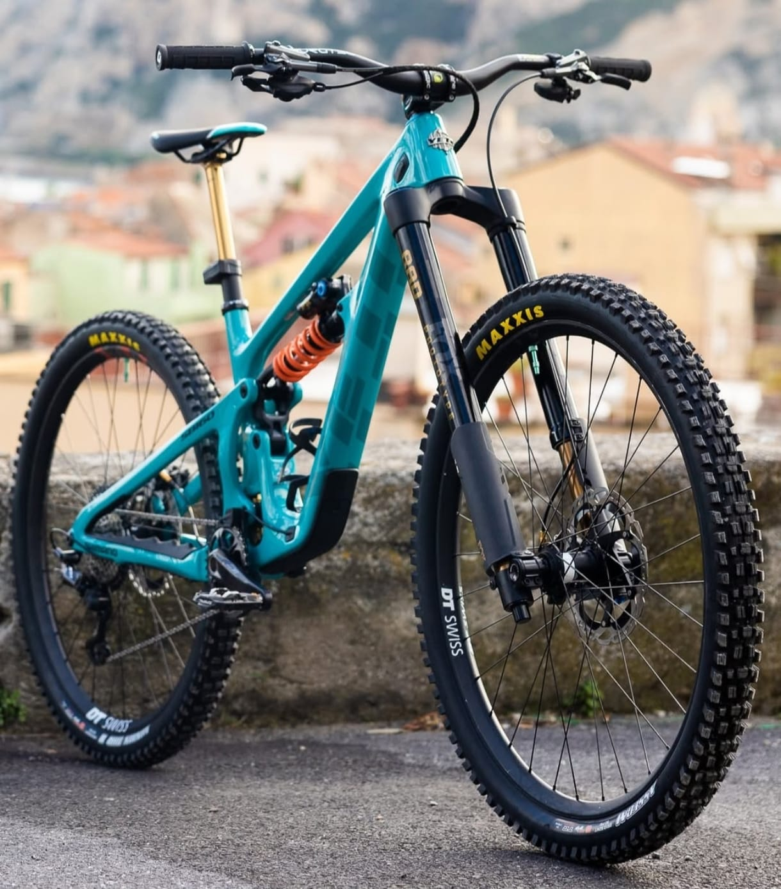

Le forcelle a steli rovesciati, conosciute anche come upside down o USD, sono una configurazione in cui la parte più robusta degli steli è collegata al telaio, mentre quella più sottile è in basso, vicino alla ruota. Questo design, molto usato nelle moto, sta trovando sempre più spazio anche nel mondo MTB, soprattutto nelle discipline gravity come enduro e downhill.
Grazie all’evoluzione dei materiali e delle tecnologie, oggi molte aziende riescono a progettare forcelle upside down leggere, rigide e affidabili. Questo ha portato a una nuova ondata di interesse, soprattutto nei settori più aggressivi della MTB.
Uno dei primi ad adottare forcelle USD in gara è stato il team Yeti, che ha iniziato a testarle nelle gare Enduro per sfruttare la loro sensibilità in discesa.
Anche nel downhill marchi come Intend e SR Suntour stanno proponendo modelli rovesciati, apprezzati per la loro progressività nella parte finale della corsa e per la capacità di assorbire urti violenti senza affondare completamente.
Con l’aumento delle bici mullet e la ricerca di sempre maggiore controllo in discesa, è probabile che in futuro le USD diventino una scelta sempre più popolare anche tra gli amatori.
← Torna alle curiosità